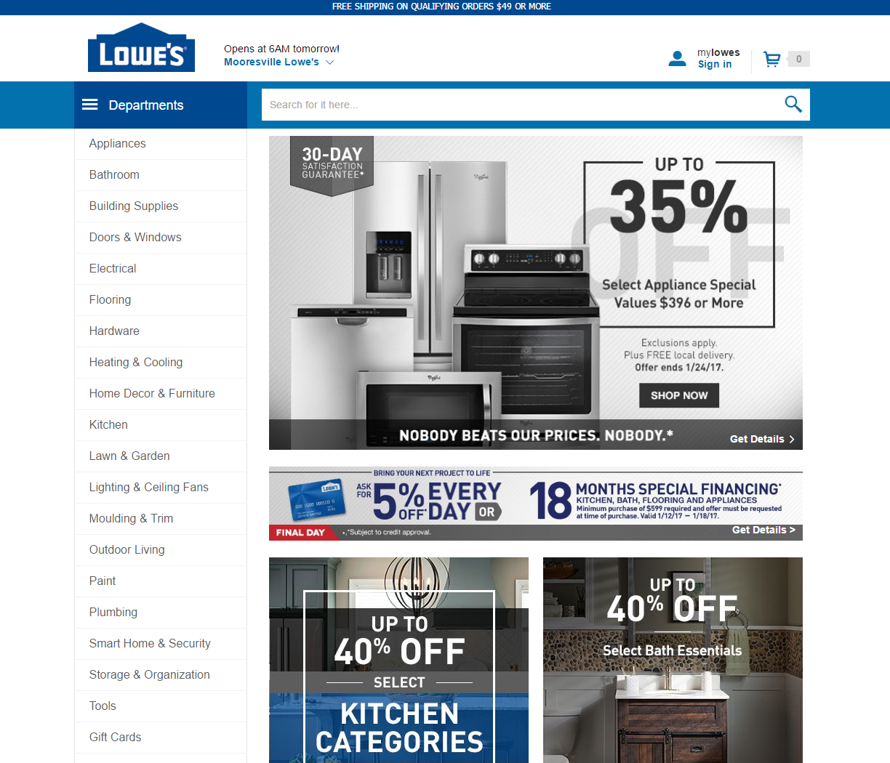
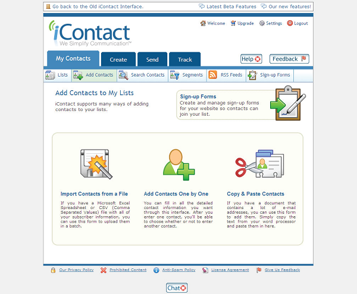
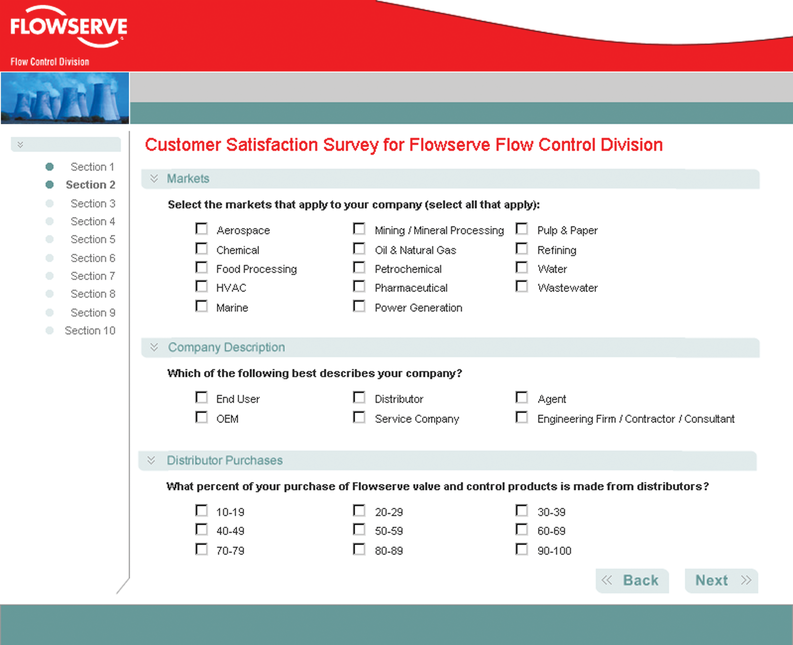

Experienced Front-End Development & Design
Proven Production Standards - Lowe's Site Redesign
Integrated custom Adobe Analytics event tracking into three different front-end platforms for a Fortune 50 retailer site.
The Lowe's Digital Analytics team was tasked with integrating complex event tracking into a rebuilt, redesigned site. Using Adobe Analytics to process incoming data, we created custom events using jQuery and implemented through Adobe Dynamic Tag Manager. Developing these custom events required working full-stack in three different platforms utilizing Adobe Experience Manager, node.js, and Websphere. I was tasked with creating a solution that allowed more in-depth interaction tracking in widgets from Adobe Target. This solution involved creating multiple plugins for Adobe Marketing Suite and pushing the capabilities of Adobe Analytics to the utmost. Upon launch, business partners were provided with a wealth of new data collection options, as well as reducing the load-time for consumers by a whopping 75%.
Exponential Growth Record - iContact Product Pivot
Researched, prototyped, and built a user experience which pivoted a modest startup into a multi-million dollar company.
Shortly after its first million in sales, iContact decided to transition their product to a more mature UX designed around their customer's needs. After generating competitive analyses of key competitors and target competitive markets, I performed content auditing on existing marketing materials. To facilitate company buy-in of user-centered principles, I worked with back-end development in an Agile environment to create functional design patterns, define user flows, establish sitemaps, and other UX deliverables. Before launch, I conducted focus groups, informal “hallway” usability audits, formal usability testing, and A/B testing in order to verify and validate application features. Trial conversion rates increased by 200% during the first quarter after relaunch and doubled the number of paying customers in a less than a year.
Creative Strategy Innovations - Flowserve Annual Survey
Built a survey that could handle bidirectional language input using asynchronous methods — three years before AJAX.
The Flowserve Customer Satisfaction Survey required bidirectional input for an international audience without specific language support. The resulting application could handle input in both RTL and LTR languages, and the language independent template displayed content properly regardless of directionality. Each set of questions and responses was stored in XML and accessed using asynchronous scripting, and translated into browser-ready HTML with XSLTs. The survey was sent to customers in over 20 different countries and received the highest response rate of any existing Flowserve customer surveys.